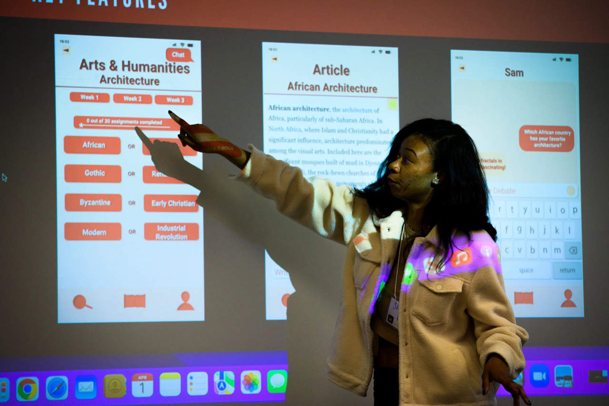

Navigating Your Active Project
As your project moves into active work, use this guide to adapt your plans, conduct human-centered fieldwork, communicate progress, and respond constructively to feedback.
Navigating Change and Challenges
Real-world projects rarely follow a straight line. Requirements may shift, team dynamics can evolve, clients may face unexpected constraints, and research can reveal surprising results.
The value of working through these challenges lies in developing resilience, adaptability, and ethical agility. When you treat friction as a natural part of the project rather than as a barrier, your team can manage changes in scope, respond to feedback, and keep technical decisions aligned with human needs.
Staying on Track During the Project
- Fieldwork and Research Methods: Use human-centered research tools to observe project contexts and turn findings into useful insights.
- Sponsor and Client Updates: Maintain transparency by sharing regular progress, decisions, risks, and changes with project partners.
- Feedback Loops: Gather, evaluate, and apply constructive feedback throughout the project instead of waiting until the final deliverable.
Resources for Active Project Work
Use these tools to support research, communication, feedback, ethical decision-making, and project management throughout your experience.
| Project Need | Resource | How It Can Help |
|---|---|---|
| Observation and Needfinding | HFLI AEIOU Worksheet for Observations | Framework to categorize field observations (Activities, Environments, Interactions, Objects, Users). |
| User Research | HFLI User-Needs-Insights Worksheet | Translates raw interview and observation data into actionable design insights. |
| Feedback Management | HFLI Feedback Worksheet | Structures mid-point feedback cycles between students, instructors, and partners. |
| Communications Planning | Student Project Communications Plan Example and Template | Establishes meeting cadences, channels, and response windows for teams. |
| Workflow Tracking | Project Management Worksheet | Hands-on tool for breaking down project goals into milestones and task assignments. |
Project Wrap-Up
Closing the Project Responsibly
A project is not complete simply because the final deliverable has been submitted. A responsible closing process helps your project partner understand, maintain, and continue using the work your team has created.
Thoughtful reflection also allows you to evaluate your growth, recognize the impact of your decisions, and turn your experience into knowledge that can support future academic and professional work.

What to Complete Before the Project Ends
- Prepare the final handoff: Organize code, design files, reports, instructions, and other project materials in formats your partner can access and use.
- Close the partnership appropriately: Review the completed work, clarify remaining responsibilities, express appreciation, and establish clear boundaries for future communication.
- Evaluate the project's impact: Compare the final outcomes with the original project goals and gather feedback from your partner.
- Reflect on your experience: Consider what you learned about technical work, teamwork, communication, adaptability, and ethical decision-making.
Resources for Completing Your Project
- Exiting a Community-Engaged Project Worksheet: Guidance for responsible project transition, asset delivery, and offboarding.
- Project Scoping Handout and Terms — Final Review: Compare the final deliverables with the original commitments and project scope.
- Ginsberg Center Student-Client Partnership Toolkit — Closing Section: Review practices for concluding a community partnership respectfully.
Celebrate Your Progress and Look Ahead
Congratulations on completing your engaged learning project! Take a moment to recognize what you accomplished, reflect on the skills you developed, and celebrate the relationships you built along the way.
When you are ready for your next challenge, explore more opportunities to apply your knowledge, collaborate with partners, and continue building your professional experience.
Explore more engaged learning opportunities